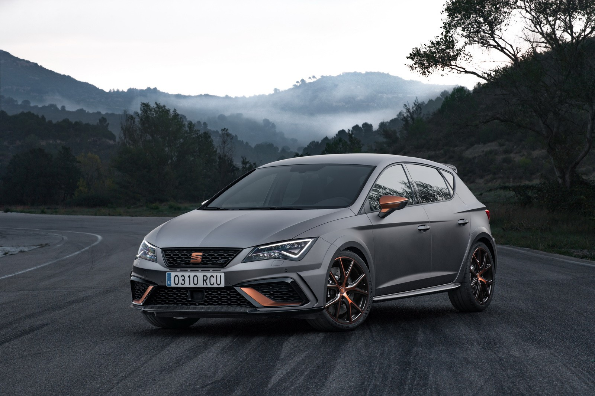
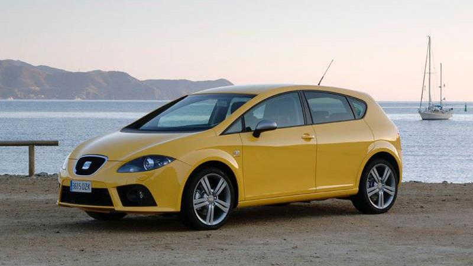

Seat León 2.0 TSI S&S Cupra Carbon DSG7 290 5 puertas 2019:
Seat León 2.0 TSI S&S Cupra Carbon DSG7 290 5 doors 2019:
Seat León 2.0 TSI S&S Cupra Carbon DSG7 290 5 portes 2019:
PRESTACIONES:
- Potencia (KW): 213
- Par (Nm): 380
- Aceleración 0-100 km/h (s): 6,00
- Potencia (CV): 290
- Velocidad máxima (km/h): 250 (limitado)
TRANSMISIÓN:
- Válvulas por cilindro: 4
- Tracción: (FWD) Tracción Delantera
- Tipo de transmisión: Automática secuencial
- Número de marchas: 7
MOTOR:
- Combustible Gasolina y corriente eléctrica
- Sobrealimentación Turbo de geometría variable
- Cilindrada (cm3) 1.984
FEATURES:
- Power (KW): 213
- Torque (Nm): 380
- Acceleration 0-100 km / h (s): 6.00
- Power (CV): 290
- Maximum speed (km / h): 250 (limited)
TRANSMISSION:
- Valves per cylinder: 4
- Traction: (FWD) Front-Wheel Drive
- Transmission type: Sequential automatic
- Number of gears: 7
MOTOR:
- Fuel Gasoline and electricity
- Supercharging Variable Geometry Turbo
- Displacement (cm3) 1.984
PRESTACIONS:
- Potència (KW): 213
- Parell (Nm): 380
- Acceleració 0-100 km / h (s): 6,00
- Potència (CV): 290
- Velocitat màxima (km / h): 250 (limitat)
TRANSMISSIÓ:
- Vàlvules per cilindre: 4
- Tracció: (FWD) Tracció Davantera
- Tipus de transmissió: Automàtica seqüencial
- Nombre de marxes: 7
MOTOR:
- Combustible Gasolina i corrent elèctric
- Sobrealimentació Turbo de geometria variable
- Cilindrada (cm3) 1.984
CARROCERÍA:
- Largo 4466mm Ancho 1796mm Alto 1392mm
- Número de puertas: 4
- Capacidad del maletero (l): 390
- Número de plazas: 5
CONSUMO:
- Depósito de combustible (l): 55,00
- Carretera (l/100 km): 5.4l/ 100km
- Urbano (l/100 km): 8.6l/ 100km
- Medio (l/100 km): 6.5l/ 100km
BODYWORK:
- Length 4466mm Width 1796mm Height 1392mm
- Number of doors: 4
- Trunk capacity (l): 390
- Number of places: 5
CONSUMPTION:
- Fuel tank (l): 55,00
- Road (l / 100 km): 5.4l / 100km
- Urban (l / 100 km): 8.6l / 100km
- Medium (l / 100 km): 6.5l / 100km
CARROSSERIA:
- Llarg 4466mm Ample 1796mm Alt 1392mm
- Nombre de portes: 4
- Capacitat de maleter (l): 390
- Nombre de places: 5
CONSUM:
- Dipòsit de combustible (l): 55,00
- Carretera (l / 100 km): 5.4l / 100km
- Urbà (l / 100 km): 8.6l / 100km
- Mitjà (l / 100 km): 6.5L / 100km

